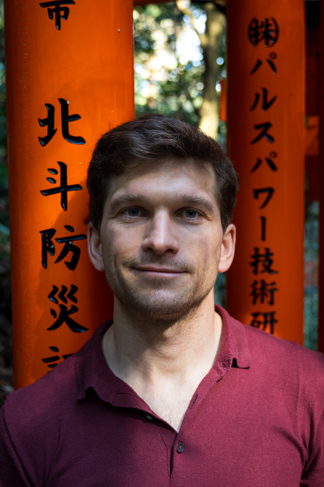

Engineer by trade, product person by heart.
From helping my teams understand user needs, through defining requirements to building robust technical solutions, I approach product engineering with a focus on clarity and precision. I enjoy tackling complex problems by breaking them down and developing iterative, user-centric solutions that deliver tangible value.
My experience spans the full product lifecycle. I have been responsible for greenfield experiments that evolved into successful, monetized products, as well as the development and maintenance of high-availability IoT systems supporting over a million devices. This taught me how to balance technical excellence and rigor with lean execution and a high pace of innovation.
I enjoy trying new tools and have practical experience applying them to improve team processes and strive to find the simplest path to impactful solutions, driven by a clear understanding of both technical feasibility and user needs.
tado° | Feb 2020 - Feb 2025
Created, from idea through launch to monetisation with hundreds of subscriptions, two innovative products in the home energy management space: Balance and Balance for Heat Pumps. Directly responsible for all engineering aspects for both backend and frontend, e.g., choosing technologies, integrating the new product into the existing system landscape, and monetising the product with subscriptions. Gradually increased product reliability by improving testing, monitoring, and alerting to match its growing impact on users and higher expectations for paid services.
tado° | Aug 2018 - Feb 2020
Development, scaling, and maintenance of a highly available cloud-based IoT platform that grew from tens of thousands to over a million connected devices.
AGH University of Science and Technology, Cracow (Poland) | 2012 - 2014
Focus on image processing for medical applications.
Technische Universität Berlin, Berlin (Germany) | 2012 - 2013
Erasmus programme.